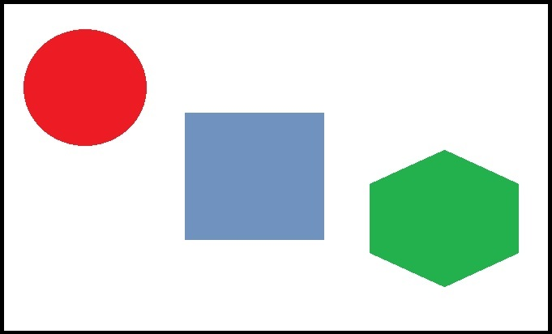
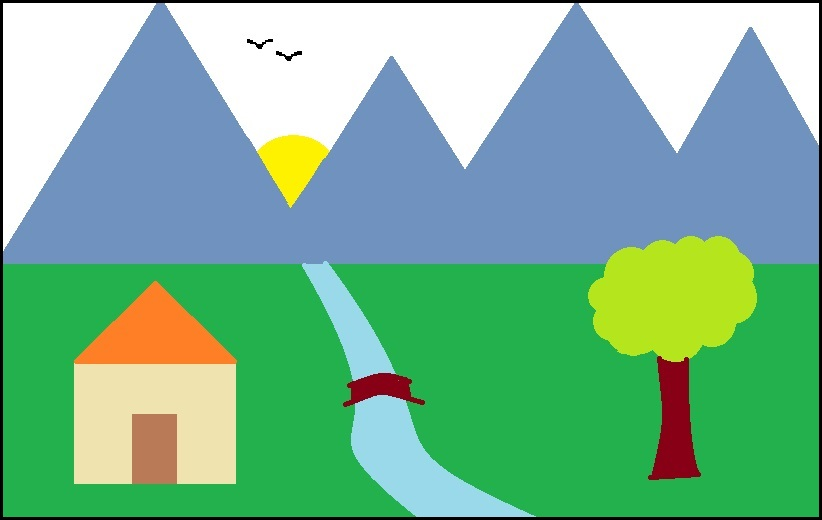

Example of moving image.
Example of broken link of image.
Example of an image map with clickable regions.


This is an example of picture element. Please resize the width of your browser window to see the difference.
Back to index page